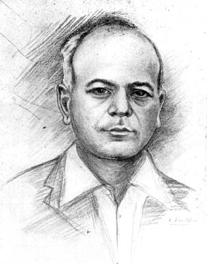

The Late Dr. Rangachariar
BY K. CHANDRASEKHARAN, M.A., B.L.

Dr. S. Rangachariar
|
From a sketch by K. Ram Mohan Sastri |
By courtesy of The M. L. J. Press |
When the history of Madras gets recorded, there is a name which will appear towering above the rest with its sure hold on our lasting impressions. It is the name of ‘the Doctor’. There is something in the appellation which of itself demands our unalloyed gratitude. That is the pre-eminent reason why Dr. Rangachariar will be ever remembered. We know the doctor’s is the most important profession, not even excepting the lawyer’s, which is equally distinguished. But the better the kind of profession one belongs to, the more desirable it is that one should be better of its kind. One honourable calling does not differ much from another in its service to society; but the doctor’s needs must be the most serviceable. And Dr. Rangachariar never struck anyone but that he existed for others, ever diligent in his succour to the suffering, ever planning for their health and welfare.
Years back when, in this city of distances, no other doctor could be induced to respond to urgent calls with innate promptitude and celerity, Dr. Rangachariar was the first to fly to his patient’s side, no matter how poor and un-known, whether in the heart of the city or on its fringes. If eschewing every other thought in the concentration upon his work of saving lives would imprint the doctor with the mark of an angel, he was indeed an angel. Like science, he seemed to conquer the forces of nature in his steadfast aim of help and progress to humanity. The tremendous speed of his car, the silent working of his mind in an atmosphere charged with the keenest expectation of the consequences of life and death, the utter lack of communicativeness on his part when faced with a grave situation, all denoted his intense devotion to his work, and his work only. Never could it be laid at his door that he posed for being profound or was hasty to escape strain and strenuous labour. If he showed himself quick and overcoming all personal inconveniences in the discharge of his duties during the day, he was even more ready to help the diseased and the dying in the gloomier hours of the night, denying himself both the necessary rest and sleep. Naturally, his was the one name that spread from mouth to mouth with the great increase in his practice and the still greater increase of his share in relieving the misery of the world. He seemed to seize life with a superhuman energy, harnessing every bit of it to a higher purpose. He reckoned, not without practical wisdom at any rate, that to die in the comfort of an undisturbed conscience is as assuring as that of a secure fortune or a safe investment.
But, strangely enough, he seemed not to recognise God in any form. Perhaps he considered it even ‘impertinent to interpose a religions sentiment, when the call of action was imminent. Rather the ceaseless occupation of a life of ungrudging service deprived him of the reflective calm to engender the ‘gentle flame of devotion’ in his heart. The very disproportionate supply of human woes might have so much benumbed his feelings as to take away all sense of devotion to an All-Merciful Being. He conveyed the feeling to the last, that he was not captivated by any religions spirit in the faithful discharge of his duty.
Still unlike the rest of us, he evolved a higher destiny for himself. The spur to his action was not the incentive of lesser men. It is clear he was not actuated by a mere passion to reach the pinnacle of professional glory. Else he would not have chosen an individual line of his own in everything he did, from the manner and method of his treatment to the spirit and sacrifice he brought to bear on his work, no matter how risky and subject to criticism sometimes such a deviation from the generality inclined him. The moment he learnt of an increasing demand on his labours, he was not loath to relegate every other claim on him to a subordinate place in his attentions. He never stopped for gain nor spared himself for profit. He neither considered it fair to impose, on others his uncommon intellect nor felt it proper that other should be curious to know the springs of his action. He was ever alive to his great powers and was confident to the very core of his being. He shaped his life and carried his thoughts in unison with the distinguished career he carved out. No doctor ever achieved greater reputation with less obtrusion of his self or with more calculated neglect of all arts to win popularity and recognition. He allowed others to share the keen sense of rivarly and success. He had an absolute indifference to the wealth he amassed and a disregard for all professions and fuss that combine to aid the accumulation of importance in social circles. His manner was generally abrupt and reticent. It was legitimately born of a feeling that wasting talk and gossip during work would lure away the mind from realising the full responsibility of the task before it. He did not welcome idle pleasure or conviviality, and if he happened to sail for a distant land, he preferred to leave the station without informing even his closest friends when exactly he would move away, lest their warm demonstrations should embarrass him.
It is but natural that such a brilliant man with a conspicuous title to admiration should have excited jealousy in his colleagues when he was in the Government’s employment. True, he was not much disposed to co-operate with others in his work, with that superior brain of which he was justly conscious. True also, that ordinary minds, when brought into contact with his, felt the depression of inferiority complex. It was patent, his mind had a precision that amazed his co-adjutors. They could not keep pace with the ever invigorating resourcefulness of his brain. It was assuringly collected even in the vortex of complication. It was always self sufficient, never self-deceptive. It never took in anything for granted nor gave up everything that was offered as useless. Throughout, this sane attitude to think for himself stood him in good stead. His early distinction as a sure hand at every form of surgery; his increasing reputation in the mofussil for his creditable handling of the most difficult major operations; his unparalleled skill in maternity cases; his splendid courage in running a private nursing home of his own after resigning his connection with the General Hospital,–all speak volumes of his ability to rise to unapproachable eminence in the profession. To find him working like a machine without interval in the Nursing Home from the break of day till the sun had actually crossed the meridian, with nothing to wet his throat save a cup of buttermilk occasionally, convinced us of his stamina to sustain him in the varied and taxing work he performed. Notice him in a critical situation brought almost face to face with Death trying to cast the noose round his patient’s neck, his lips compressed in thoughtful silence, his gait rapid and decisive, his intolerance rampant at the anxiety expressed by the patient’s relatives, his looks demanding room for his movement in the sick-room and freedom from prying eyes round the sick-bed, his whole manner indicating extreme control of irritability. One might even consider him almost at his wit’s end to save the ebbing life. His powers would then rise equal to the occasion. He employed all his acquired skill and experience in finding out a way for ensuring hope. At his suggestion his assistants would fly and fetch the necessary instruments. There would be no noise or commotion, but only briskness adequately joined to alertness. There would be no lack of clarity of thought, no rashness exposing want of foresight, none of the incorrigible fads from which specialists suffer, not a word or sign of slackening effort, nothing but intense functioning of the mind to the last, with all the sincerity of purpose and optimism at his command. Doctors there have been and are, prized for their powers of efficient diagnosis; but none who could more readily and unostentatiously devise remedies without causing any the least anxiety in the patient about the dire malady or its fatal course. There have been many experienced men in the profession with a claim to recognition for their infinite capacity to take pains; but none more prone to combine, so happily, whatever the latest scientific thought taught him with the knowledge gained by personal observation of two decades and more.
But to look upon him as purely an automaton is to forget the fine traits which shaped him into a worthy specimen of our race. Beneath the great doctor were visible traces of a spotless character. To adhere to intellectual honesty and independence without fear of losing popularity is no easy thing in any profession, much less in the medical. A busy practitioner, if he desires to become prosperous, can hardly afford to erase, rightly or wrongly, the impression on his patients that medicines alone would work the desired change. It assures him an abiding clientele and a name for drawing upon an inexhaustible memory for medicines, which flow fast from his pen as he writes the prescription. Dr. Rangachariar was never influenced by any such thought to prove his indispensability by a prescription. He was careful in his examination of a case, cautious in his administration of the quantity of doses, and cared not for the patient’s favour or ill-will, provided he was himself sure of the nature of the disease and the treatment it required. Sometimes he was so frank as to pronounce the person, seeking consultation with him, free from any actual complaint. He would even repeatedly instill into the mind of his indefatigable client the utter uselessness of medicines when a timely regulation of his diet or exercise could do the needful and restore him to normal health. Unlike a distinguished contemporary, he trusted more to his own intellect than to faith. If he failed in his honest endeavours, he never resigned himself to a higher power. He seemed to devote no more thought to the interaction and play of Destiny in such matters than his Rolls Royce did as it noiselessly sped through the thoroughfares of men. He suffered little from philosophic tendencies that counsel complete surrender of effort under the omnipotence of Fate. But if his mind was not yielding to the wider interests of public life like that of the late Dr. Nanjunda Rao of Mylapore, it worked within the chosen confines with a rare dedication and wholesome detachment. He was more inclined to satisfy his own conscience than seek satisfaction of the vast multitude of his patients. His judgment only was his friend, his reason alone his philosopher, his optimism his chief guide. Once, in the oppressive suspense in which people found themselves regarding the condition of a patient, a bold lady thought it not improper to acquaint the doctor of the considerable worry of the relatives of the patient and asked him whether another doctor’s help at such a juncture would not be desirable in arriving at a decision about the nature of the illness. He was heard to remark afterwards as he left the house ‘she thinks she can beard the lion in its own den’. Such was his attitude to any attempt to interfere with him. He was strong in his resolution and braved the stoutest opposition if he had to. He could put up with any scandal and rumour about him. He never looked affected or appeared to take notice of their existence. More than once, vile jealousy engineered the most objectionable form of rumour against him. It was said in the year 1926 that he had died at Ooty and his body was to be removed by train to Madras. The information spread like wild fire and many were the enquiries that reached him. He never probed into the causes of or the psychology behind such an outrageous invention of a story. He smiled gently at such spurious anecdotes, while enthusiastically enjoying a game of bridge at the Lawley Institute on the hills, with surprising ease and unconcern.
This unconcern and detachment he evinced in every phase of his life. His living a life untrammeled by conventions and contritions of any kind elevated him from abject conformity to public opinion. If he was generous in his impulses, he sought no reason to justify his bounty. He never argued nor tried to explain. He scarcely wavered in choosing his own manner of appreciation of a good thing.
Few others sought less to earn undying plaudits or proved more immune against the temptations and vanities of a successful career. Unlike many others in the grip of unprecedented success that wipes out all vestiges of delicacy, he was loath to dwell upon his achievements or indulge in listening to others’ narration of them to his face. If ever he was overcome by feelings of confusion and conflict, it was only when his beneficiaries tried to evince their admiration for him in a fitting manner. He was deliberately gentle and considerate to his numerous patients and never bargained for the amounts he should receive from them as his fees. Whatever was paid was accepted by him with no more feeling than one of placid satisfaction that he did his duty and they theirs in return. But if ever one tried to reduce the amount of his medical bill after asking repeatedly for it, he would not hesitate to show his resentment in the sharpest manner possible. ‘You see, I am not going to be dealt with like that,’ he would utter, and as the jerky sentences finished with the closing of those lips in derision, one felt that to have incurred his displeasure was to have courted disgrace of the worst type.
The picture would remain incomplete without mentioning the lighter aspects of the man. Under cover of a somewhat reserved nature, he hid a storehouse of rich humour and pleasantry. In a facetious company comprised of his close friends he could freely employ any amount of lively banter and subtle joke. ‘What a garrulous man he is!’ said a friend of his in high position, ‘you can listen to him for hours without, flagging.’ Maybe he was not a polished conversationalist or a connoisseur of diverse arts, yet his culture had just that measure of sobriety and commonsense to enable him to judge rightly of those who displayed them.
As a safe physician and a remarkable surgeon he will be placed high among the best in the ranks of the medical profession. Whatever record leap to light, he shall never be criticised for mismanaging a case that ended fatally. He might have occasionally given room for complaint regarding his in-difference to slight changes in the health of a person otherwise keeping a normal condition. He might have appeared un-sympathetic to a mind requiring constant attendance without any justification whatever in his eye. He might have hurt some with his somewhat sharp and truculent expressions if they tried to assist him. But never was he less wary or observant of the points of complaint than any of the most patient or painstaking doctors: Why, he possessed a most enviable mixture of the qualities that were best in others. Most memorable indeed, or rather cherishable, than all the rest of his traits, was his complete emancipation from vilifying tendencies that beset others in the same field as himself, though, if occasion forced it, he could show himself quite capable of a crushing retort or retaliation.
His death has been mourned by high and low as having struck the deepest blow at them. Many who have not known him too closely or grasped the inner workings of the man, feel they have lost in him a genuine friend and benefactor. We wonder then, was it the dominating personality of the doctor that influenced them? Or was it his complete individuality or his singular disregard of the normal methods by which doctors try to impress their patients? Or was it something sharply penetrating in his looks and soothingly resonant in his inspiring voice? Or was it, after all, the inexplicable glamour clinging to him of his Rolls Royce and Moth-plane? For whatever reason, he stamped himself vividly on the mind of the people of a vast presidency. He is indeed imperishable, although the cruel flames have consumed his great and good freightage. He lives; for he belongs to that order of men who, like stars, shine for ever, reminding life on earth of True Labour having ‘its summit in heaven’.